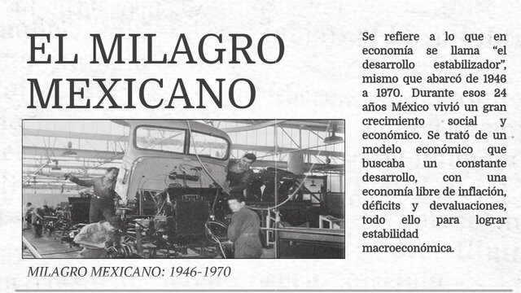

DETRAS DE LA SILLA PRESIDENCIAL : EL IMPACTO SOCIAL EN LA HISTORIA
28 de Mayo de 2026.
TECNOLOGÍAS DE LA INFORMACIÓN Y COMUNICACIÓN
SUBMÓDULO 1 91
"EL MILAGRO MEXICANO"
¿Qué fue?
- El Milagro Mexicano fue un periodo de crecimiento económico sostenido en México que ocurrió aproximadamente entre 1940 y 1970.
Durante estos años, el país experimentó industrialización, aumento de la producción y una mejora en la infraestructura nacional.
CARACTERÍSTICAS PRINCIPALES
- Crecimiento de la industria nacional.
- Construcción de carreteras, escuelas y hospitales.
- Aumento de empleos en las ciudades.
- Ética y Valores
- IntrodMayor inversión en infraestructura.
- Estabilidad económica y control de la inflación
IMPACTO SOCIAL
- Mejoraron las condiciones de vida de muchas familias.
- Más personas tuvieron acceso a la educación.
- Hubo migración del campo a la ciudad en busca de trabajo.
- Se modernizaron diversos servicios públicos.
© 2021. Derechos reservados.
Elaborado por: Angelique Perez Zuñiga
Matrícula: 2320032025
Grupo: 6102
Plantel:CEMSaD DURANGO